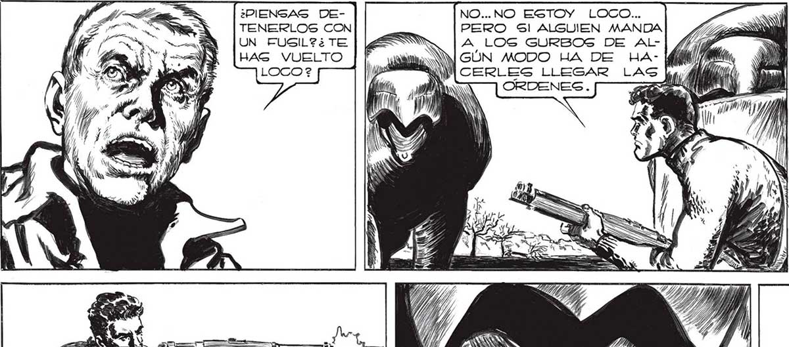
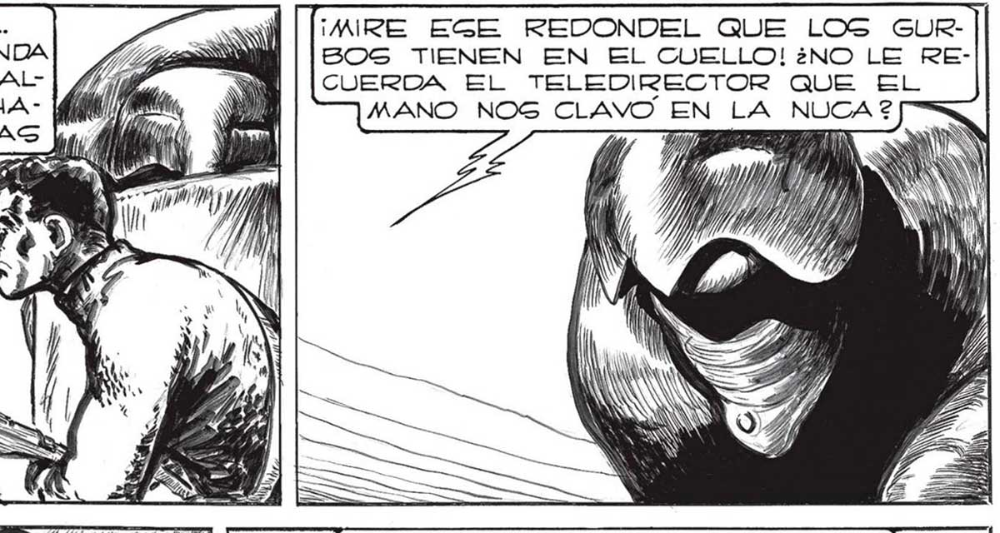
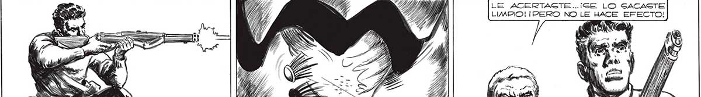

220 ¿PIENGAG DETENERLOS CON UN FUSIL?¿TE HAG VUELTO NO... NO ESTOY LOCO... PERO Sl ALGUIEN MANDA A LOS GURBOS DE AlLlN GÚN MODO HA DE HA- (él NM CERLES LLEGAR LA ¡MIRE EGE REDONDEL QUE LOS GURB650S TIENEN EN EL CUELLO! ¿NO LE RECUERDA EL TELEDIRECTOR QUE EL MANO NOG CLAVO EN LA NUCA 2 A SÍ Y LE ACERTACGTE..¡SE LO SACASTE LIMPIO! ¡PERO NO LE HACE EFECTO! 3 > <* HE Too OCURRIA CON RAPIDEZ ALUCINAN- hey ee re TE. SE APLAGTABAN LOG VEHÍCULOS O y BAJO LOS COLOGALEG PESOG. YA NO AA A hi AY PODIAMOS RETROCEDER MAS. FRANCO CA MA e, > HIZO FUEGO... <= Su PUNTERÍA FUE CERTERA. 4 "TI Te 18 1/0 S N


